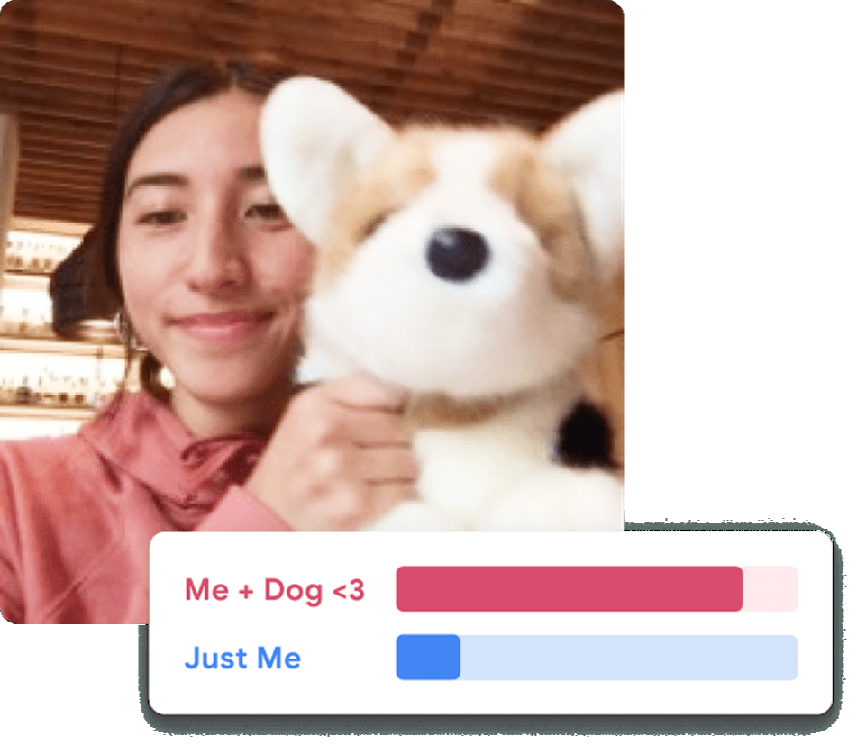

프로그램 #4
🚗 IR 자동차 × Teachable Machine
장애물을 인식해 멈추거나 피하는 IR 자동차를 제작하고, Teachable Machine으로 학습시킨 간단한 인식 모델을 연동해 실제 반응을 체험하는 활동
키트 구성품을 확인하고 체크해주세요.
자율주행 자동차가 어떻게 주변 환경을 인식하는지 알아봅니다.
적외선 센서의 원리와 DC 모터 제어 방법을 학습합니다.
코끼리 디자인 Safari 자동차를 조립하고 장애물 회피 주행을 테스트합니다.
모터 회전 중 바퀴에 손가락이나 머리카락이 끼지 않도록 주의하세요. 테스트 시 테이블 가장자리에서 떨어지지 않게 주의하세요.
Google Teachable Machine으로 이미지 인식 모델을 직접 만들어봅니다.

각 클래스별로 최소 30장 이상의 이미지를 다양한 각도에서 촬영하면 인식 정확도가 크게 올라갑니다. 배경을 단순하게 하면 더 좋아요!
오늘 배운 IR 센서 기술과 AI 인식의 연결고리를 정리합니다.
Google Teachable Machine은 코딩 없이 브라우저에서 바로 사용할 수 있는 AI 머신러닝 도구입니다. 이미지, 소리, 포즈를 학습시켜 나만의 인식 모델을 만들 수 있습니다. 복잡한 수학이나 코딩 없이 AI의 핵심 개념인 '학습'과 '추론'을 직접 체험해보세요.
Teachable Machine 바로가기